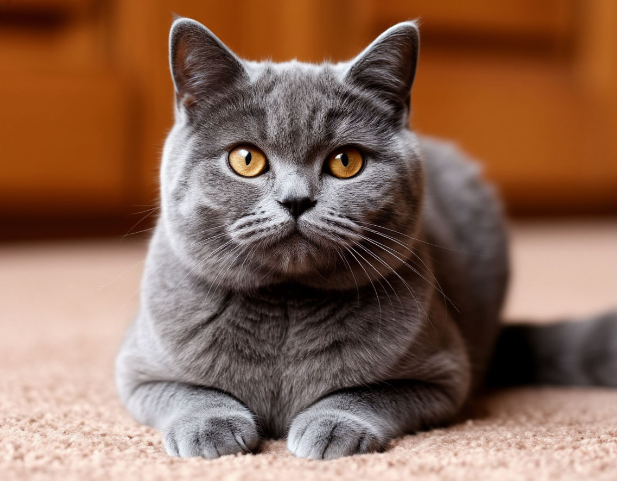
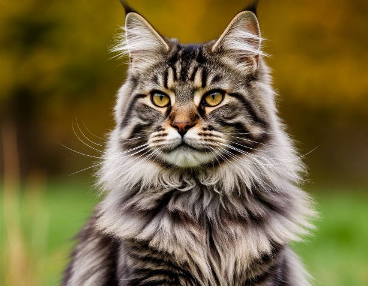
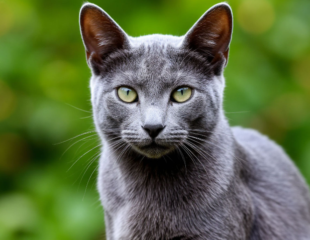
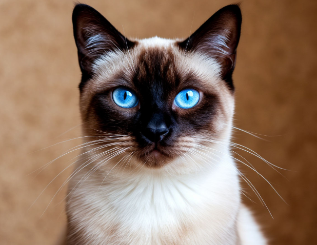
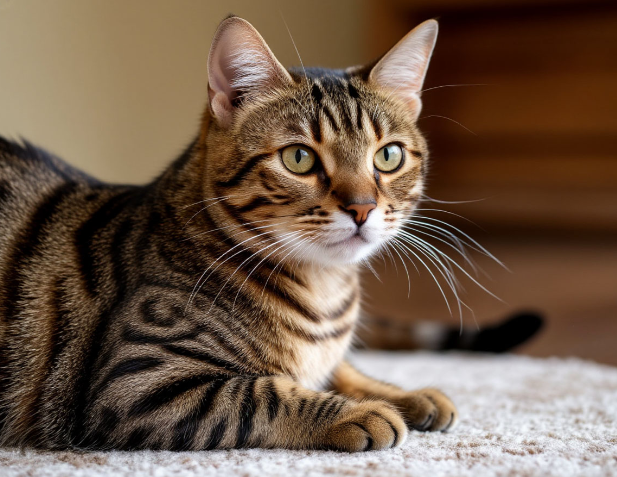

1. Британская короткошёрстная

Независимый "плюшевый" аристократ с уравновешенным характером. Спокойно переносит одиночество и не требует сложного ухода. Идеальный выбор для занятых людей и семей с детьми.2. Мейн-кун

Крупная, но дружелюбная порода с мягким характером. Несмотря на внушительный вид (вес может достигать 10 кг), они ласковы, игривы и легко уживаются с другими животными3. Русская голубая

Элегантная кошка с короткой шерстью и изумрудными глазами. Отличается чистоплотностью, спокойствием и преданностью. Хорошо подходит для размеренной жизни в квартире.4.Сиамская кошка

Энергичная и общительная порода. Сиамы очень умны, любят "разговаривать" и требуют внимания хозяина . Идеальны для тех, кто ищет активного и преданного компаньона.5.Бенгальская кошка

Активный и любознательный питомец с эффектной "дикой" внешностью. Требует пространства для игр и внимания. Подойдёт людям, готовым уделять много времени занятиям с питомцем.